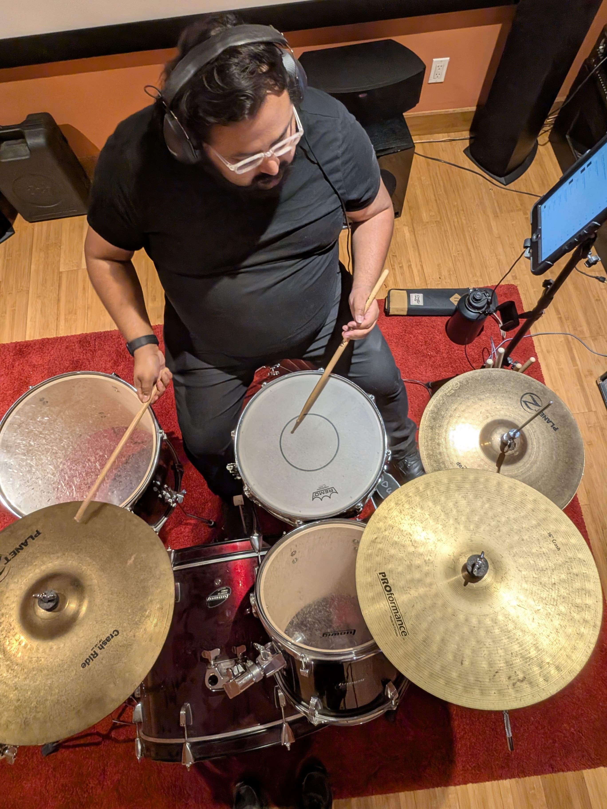

My journey with music started pretty randomly. My sister suggested I try drums when we were picking middle school electives, and my parents were kind enough to sign me up for lessons. I still remember my first lesson and even that first exercise, "8 on a Hand." Simple, maybe even boring to some, but it hooked me instantly. I studied with my teacher for 7 years after that, and that foundation has shaped everything I do today.
I've been playing percussion for over 19 years now. From styles such as concert percussion, marching percussion, jazz, steel pan, and Latin percussion, you name it. If it involves hitting something to make sound, I've probably tried it. Piano came later, in 2017, but it felt natural. I'd been learning keyboard layouts since middle school through bells, xylophone, marimba, and vibraphone, so I already knew the format. I just needed to learn the finger techniques to finally play the melodies and chords I'd always wanted to.
As a teacher, my approach is simple: I'm here to serve you or your child. I don't believe in forcing music on anyone. It has to come from the student. What I love most is showing people how easy it is to get started. Music can feel daunting, and I get that. I empathize with not being able to pick something up quickly. But when a student finally understands a concept and plays it themselves? That's the best feeling.
I mold my teaching to fit each student. I don't believe in pushing too hard or moving faster than someone's ready for. We go at your pace, not mine. That said, if you want to get better, if you really want it, I'll create a path and push you just past your comfort zone so you can improve. I teach all ages and all levels of neurodivergence, taking steps as large as each student can handle with a little stretch.
Let's make music together!
Comprehensive percussion instruction covering multiple disciplines:
Foundational piano instruction for beginners:

Sign up for a free trial lesson and experience personalized instruction!